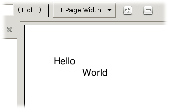
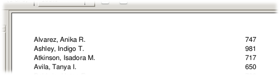
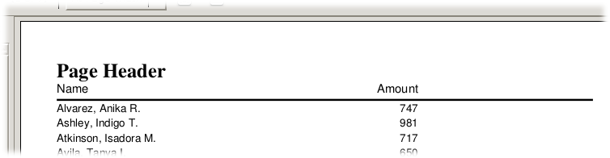
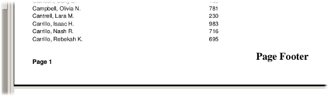

I've noticed that acceptance of a new software module or package for developers in the Open Source/Free Software world is greatly affected by the availability of a good tutorial. I mean, it seems obvious, doesn't it? But I've also noticed that the original author of a project rarely writes a good tutorial.
Well, I'm going to try it anyway. Here's my first version:
PollyReports is a small, light module providing a simple way to generate reports from databases using Python. It is designed for use with Reportlab, and a basic understanding of that package will help a great deal in using PollyReports.
The traditional way to get started with a new language is a "Hello, World" program; while PollyReports is hardly a language, we'll begin the same way:
Running this script results in a PDF file, the upper-left corner of which looks like this:

The script begins by importing everything from PollyReports; all we actually needed this time was Report, Band, and Element, but PollyReports is pretty clean so I elected to import all of it.
Next we import Canvas from reportlab.pdfgen.canvas; for this simple example, and in fact for many useful programs, that's all we need.
Lines 4-6 define our data source. Rather than querying a database, I'm just providing the data for this example in literal format.
Lines 8-14 instantiate our Report object. We pass in the data variable as the datasource, and define the detail band as a Band object. Band objects, in turn, are provided with a list of Element objects when they are instantiated. These Element objects define what data to print, what font to print it in, and where, relative to the upper left corner of the Band, the data is to be printed. In this example, both Elements use the key parameter to define what data to print from each row of data; since the data source is a list of tuples, the keys must be integer values.
Line 16 allocates a Canvas, which is passed to the Report's generate() method on line 17. Line 18 completes the cycle, saving the canvas data to the file named on line 16.
The generate() method of the Report object iterates through the data source. For each row of data, the detail band iterates through its list of Elements, generating a sort of a view of the detail band. This view is not printed, not yet anyway; first, the Report.generate() method verifies if there is enough room on the current page for the view to print. If there is, it is added to the page (we say "rendered") and the loop starts over with the next record, if any.
When Report.generate() is called, there is no valid page, so the first detail band does not fit and a new page (the first page) must be created.
For the rest of this tutorial, I'll focus on reproducing an earlier version of the testpolly.py script which is included with the source code distribution. This script depends on the testdata.py module, which contains a sample datasource in literal format, much like the pocket-sized version above.
The testdata.py data source consists of a list of dict objects, where each dict object represents a row of data. Each dict in the list has three keys associated with it: "name", "phone", and "amount". The last item, amount, is a simple integer number which I will use to demonstrate creating subtotals and grand totals.
Here's our first shot at testpolly.py, called sample02.py:
Again, we have imported Reportlab's Canvas and all the goodies in PollyReports. The third line imports our faux dataset from testdata.py.
On line 5 we instantiate the Report. This time, just to show that I can, I have omitted the detail band from the object instantiation; instead, I assign it to the like-named attribute of the new Report object on lines 6-10. Our detail band consists of the name and amount fields, the name printed 1/2 inch (36 points) from the left edge of the page, and the amount printed 400 points from the left edge.
Since the data source is a list of dict objects rather than tuples, the key values used in the Element declarations are strings rather than integers.
Note on line 9 the extra named parameter align = "right". This indicates to PollyReports that the Element should be printed aligned to the right; thus, the amount will extend to the left of (400, 0) rather than to the right.
Line 12 creates our Canvas object. This time, the page size is defined as 11 x 8.5 inches (given 72 points to the inch, of course). Reportlab has a pagesizes module that could be used for this if you like; please consult the Reportlab documentation for more information.
As before, the last two lines generate the output and saves it. The report is six pages long; here's the upper-left corner of it:

Let's dress it up a little bit. Rather than reprint the entire script, I'll just show the part that needs to be added after line 9 in sample02.py:
There are three Element objects and one Rule declared in the page header. Each of the Element objects uses the text = ... parameter (rather than the key = ... parameter) to indicate what value the Element will have. The text parameter is used whenever you want to print literal text, i.e. a label.
The Rule object is a new feature. A Rule is an Element-like object that renders a horizontal line, starting at the given position, extending the given distance to the right, having the given thickness. The default thickness is one point, if it isn't given.
The page footer has two Elements, a standard text label and an Element using the sysvar = ... parameter. The sysvar parameter gives you access to attributes of the top-level Report object; at present, the only practical reason to need this is to access the page number, which is exactly what is being done here. The page number Element also contains the format parameter, which is used to pass a formatting function into the Element. This function is used to convert the data value into a printable text string; if not given, the default is to use the built-in Python str function. Here, we're using a lambda function to dress up the page number for printing.
Run the new script and you'll get this:

And here's the bottom of the page, showing the page footer:

Printing out the data in the records is all well and good, but what we really want to see here are some totals, right? Let's start with a grand total band, also called a report footer. Again, I'll show only the part you need to add; just put it after the code in the last section:
Here we have a Rule, which has previously been explained, as well as a standard text-type Element identifying this as the "Grand Total". The interesting bit is the third item, a SumElement.
A SumElement, which really only works in group footers (described below) and the report footer, automatically adds up its own value until you print it, at which time the value is reset to zero. So, a SumElement in the report footer will sum up its value and print it at the very end of the report. This particular SumElement sums the "amount" field from our pseudo-database.
The last Element has a null string text parameter; the purpose of this is to take up space, so that the report footer is guaranteed not to be too close to the page footer.
Here's the report footer as it prints out on the last page of the report:
So, imagine for the moment that we want to break this list up alphabetically. Don't ask me why... we just do. Here's how you add a group header band which will print at the beginning of each "group" of rows:
Again, we have a Rule to draw a line on the page; this one will be at the bottom of the band. We have an Element, to print the first letter of the "name" field. Here, we are using the getvalue = ... parameter, to define a function to "compute" the data. The function referenced by getvalue receives a single parameter, which is the current row. For a group header, the "current row" is the first row of the new group (which has not yet printed). We're also using format = ... in the Element to dress up the value a bit.
Line 7, above, shows a critical bit for a group header: how the Report knows that the row has changed. Each group header band (and group footer band, for that matter) has its own "value," and when that value changes, the band is printed. Unlike Elements, a Band may only use the key or getvalue parameters to extract its value. (At present, I can't think of any reason to allow text or sysvar parameters.)
A Report may have more than one group header band (this is why they are represented as a list). If a group header band is deemed to have changed, all higher-level (i.e. earlier in the list) group headers are also reprinted, even if they haven't "changed" per se.
Here's what the group header looks like printed:

By now, this should seem old hat. A group footer band combines the techniques shown above for the report footer and group header bands. Here's the new code:
The only new feature shown here is on line 13: the newpageafter parameter. If true, newpageafter indicates that a new page should be forced after this band is printed. There is also a newpagebefore parameter, indicating that the band should always be printed on a new page. Neither newpagebefore nor newpageafter apply to detail bands, page headers, or page footers, and newpageafter also does not apply to the report footer.
It would be nice to be able to indicate to the user that his or her report is being processed. Most programs make use of a progress bar or other indicator to show that everything is still working. Other report generators use complex event systems to arrange this; PollyReports does it all with Element.onrender.
There are two different ways most developers would choose to indicate progress: by counting rows and by counting pages. Here's how we count pages. First, add this to the top of the script:
Next, change one of the page header Elements to include a call to this function:
All we've changed here is the addition of the onrender = pagecount parameter to the first Element. It would be fine to add this to any one of the Elements in the page header.
Finally, change the last part so it reads like this:
When you run this script, you'll see the following in your terminal window:
Counting rows works much the same way, and is left as an exercise for the reader...
Well, that's it. If you've hung in this long, you should have a pretty good idea how to create reports with PollyReports. Please submit questions or comments to me at chris@gonnerman.org.
For your convenience, you may download the source files detailed above in a single zip file here: pollyreportstutorial.zip